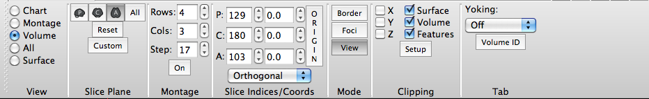

Volume View
Volume View displays brain volume slices. In Volume
View the Toolbar looks like this:

- Slice Plane contains buttons to
set which volume slice planes are displayed: P (parasagittal),
C (coronal), A (axial), All (all 3
planes).
- The Reset button resets the
orientation/zoom to the default.
- Custom Orientation allows
one to set and save (or not) a specific transform (pan,
rotate, oblique rotate, zoom) for a surface or volume.
- Montage contains settings for
viewing multiple volume slices from a single slice plane at
once. Rows/Cols set the number of Rows or
Columns of slices to display. Step sets the index
spacing between slices in the volume slice montage.
- Slice Indices/Coords
contains settings for the slice index and stereotaxic
(Talairach) coordinate to be viewed for each slice
plane. The
vertical Origin button rests the slice indices to
the default (centered at the AC). The pull-down at
the bottom toggles between Orthogonal and Oblique
volume viewing.
- Mode contains buttons for
switching between Viewing Area mouse controls
for performing actions including Border
drawing and Foci creation
or typical View mode.
- Clipping contains settings
for cutting down Surface, Volume, or Features data to be
viewed.
- Tab contains cross-tab
functions for yoking the display of two or more Viewing Tabs and
the Volume ID button that
turns on movement of the volume slice/crosshairs displayed to
the same plane as the brainordinate selected in any of the
non-Chart view tabs.